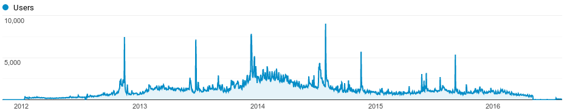
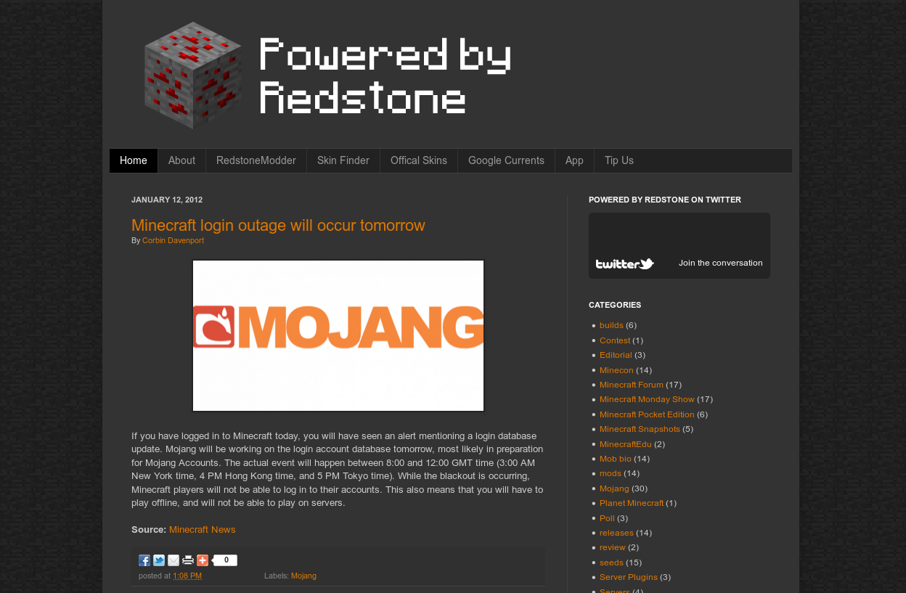

One day, eight years ago, I created a Blogger blog called ‘Powered by Redstone’. The name was shamelessly copied from an officially-licensed Minecraft t-shirt, but I’m pretty sure I told people I came up with the name. The first post was about a recreation of Valve’s Half-Life in Minecraft, which I eloquently described as “epic game meets another epic game.”
I honestly haven’t thought about Powered by Redstone in ages, but this morning I woke up to a recurring Google Calendar alert about the site’s birthday. Today marks eight years since that first post was published. I was still in middle school.
Even when I was maintaining it, the blog was a bit embarrassing for me to talk about in ‘real life.’ I continued to actively work on it during my first and second years in high school, and by then, Minecraft was starting to be seen as a kiddie game. I didn’t even mention it much on my personal Twitter, because people from my school followed me (for what reason, I couldn’t tell you, I was the stereotypical non-social kid).

All the while, I still enjoyed writing posts. In its prime, Powered by Redstone received 2,500 daily visitors, with an all-time high of around 9,000 visitors in mid-2014. At one point, I was also making a decent amount of money from Google AdSense — enough to buy myself a Google Nexus 5 on its release date in October of 2012.
I eventually lost interest in Minecraft, which obviously meant I didn’t quite enjoy writing about the topic. But I kept coming back to that god-awful Blogger editor because writing was fun. That Nexus 5 I mentioned earlier sucked me into the world of Android (even deeper than I was before, at least), which led me to apply to a site called Android Police in 2016.

Earliest archived link, from January 2012
I didn’t think I had a shot at being hired, but somehow I was accepted. I’m not sure if my mention of Powered by Redstone in my application email (or the fact that I had previous WordPress experience from running the blog) helped at all, but I’m going to tell myself it did, because it makes this story end in a nice roundabout way.
Three years later, I’m still happily working at Android Police, where I get to work with an amazing group of people and write about stuff I care about. Powered by Redstone holds a special place in my heart for starting me down a road that I am still traveling on, and one that I hope to continue traversing into the future.
Here’s to eight years of Powered by Redstone :)